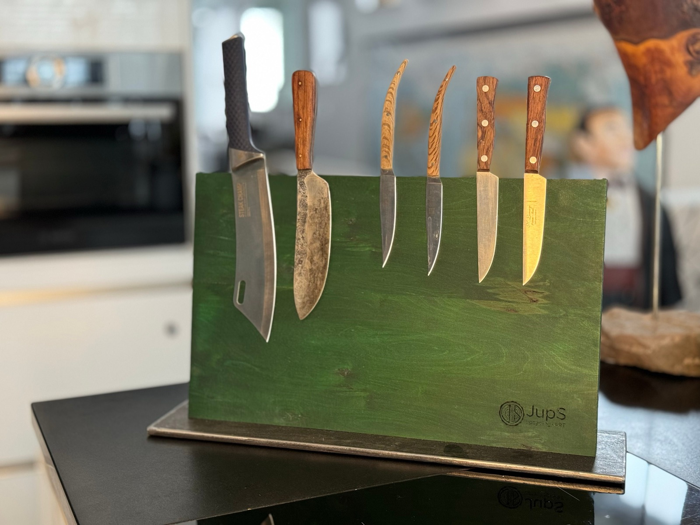

Küchenaccessoires · Handgefertigtes Unikat
229 €
Inkl. Versand. Preis inkl. MwSt.; aufgrund des Kleinunternehmerstatus wird gemäß § 19 UStG die MwSt. in der Rechnung nicht ausgewiesen.
oder direkt an jups.upcycling@gmail.com
Platz für 7 Messer: Der Messerblock besteht aus einer 40 mm starken Multiplex-Platte aus Birke, gebeizt und gewachst, mit JupS-Logo. In die Rückseite sind 21 starke Scheibenmagnete (25×5 mm, Typ N45, vernickelt) versenkt und mit Originalholzstopfen verschlossen.
Die Grundplatte ist eine massive, grob geschliffene Stahlplatte mit 8 mm Dicke – lediglich eingeölt, um Korrosion vorzubeugen. Auf der Unterseite sind Filzgleiter angebracht.
Die Haltekraft der Magnete ist von den Messern abhängig – bitte prüfen Sie vor dem Kauf, ob Ihre Messer magnetisch sind. Abgebildete Messer sind Deko und nicht Teil des Lieferumfangs.
Holz ist ein Naturprodukt: Wuchs, Farbe, Struktur und Maserung sind bei jedem Baum verschieden. Kleine Lunker, Verfärbungen oder nicht perfekte Kanten sind keine Qualitätsmängel, sondern Teil des Charakters.
Pflegetipp: Die Stahlplatte gelegentlich leicht einölen – das sieht schön aus und verhindert Rostflecken.